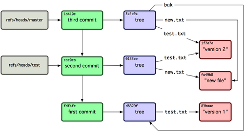

Git References¶
你可以执行像 git log 1a410e 这样的命令来查看完整的历史，但是这样你就要记得 1a410e 是你最后一次提交，这样才能在提交历史中找到这些对象。你需要一个文件来用一个简单的名字来记录这些 SHA-1 值，这样你就可以用这些指针而不是原来的 SHA-1 值去检索了。
在 Git 中，我们称之为“引用”（references 或者 refs，译者注）。你可以在 .git/refs 目录下面找到这些包含 SHA-1 值的文件。在这个项目里，这个目录还没不包含任何文件，但是包含这样一个简单的结构:
$ find .git/refs
.git/refs
.git/refs/heads
.git/refs/tags
$ find .git/refs -type f
$
如果想要创建一个新的引用帮助你记住最后一次提交，技术上你可以这样做:
$ echo "1a410efbd13591db07496601ebc7a059dd55cfe9" > .git/refs/heads/master
现在，你就可以在 Git 命令中使用你刚才创建的引用而不是 SHA-1 值:
$ git log --pretty=oneline master
1a410efbd13591db07496601ebc7a059dd55cfe9 third commit
cac0cab538b970a37ea1e769cbbde608743bc96d second commit
fdf4fc3344e67ab068f836878b6c4951e3b15f3d first commit
当然，我们并不鼓励你直接修改这些引用文件。如果你确实需要更新一个引用，Git 提供了一个安全的命令 update-ref:
$ git update-ref refs/heads/master 1a410efbd13591db07496601ebc7a059dd55cfe9
基本上 Git 中的一个分支其实就是一个指向某个工作版本一条 HEAD 记录的指针或引用。你可以用这条命令创建一个指向第二次提交的分支:
$ git update-ref refs/heads/test cac0ca
这样你的分支将会只包含那次提交以及之前的工作:
$ git log --pretty=oneline test
cac0cab538b970a37ea1e769cbbde608743bc96d second commit
fdf4fc3344e67ab068f836878b6c4951e3b15f3d first commit
现在，你的 Git 数据库应该看起来像图 9-4 一样。
图 9-4. 包含分支引用的 Git 目录对象
每当你执行 git branch (分支名称) 这样的命令，Git 基本上就是执行 update-ref 命令，把你现在所在分支中最后一次提交的 SHA-1 值，添加到你要创建的分支的引用。
HEAD 标记¶
现在的问题是，当你执行 git branch (分支名称) 这条命令的时候，Git 怎么知道最后一次提交的 SHA-1 值呢？答案就是 HEAD 文件。HEAD 文件是一个指向你当前所在分支的引用标识符。这样的引用标识符——它看起来并不像一个普通的引用——其实并不包含 SHA-1 值，而是一个指向另外一个引用的指针。如果你看一下这个文件，通常你将会看到这样的内容:
$ cat .git/HEAD
ref: refs/heads/master
如果你执行 git checkout test，Git 就会更新这个文件，看起来像这样:
$ cat .git/HEAD
ref: refs/heads/test
当你再执行 git commit 命令，它就创建了一个 commit 对象，把这个 commit 对象的父级设置为 HEAD 指向的引用的 SHA-1 值。
你也可以手动编辑这个文件，但是同样有一个更安全的方法可以这样做：symbolic-ref。你可以用下面这条命令读取 HEAD 的值:
$ git symbolic-ref HEAD
refs/heads/master
你也可以设置 HEAD 的值:
$ git symbolic-ref HEAD refs/heads/test
$ cat .git/HEAD
ref: refs/heads/test
但是你不能设置成 refs 以外的形式:
$ git symbolic-ref HEAD test
fatal: Refusing to point HEAD outside of refs/
Tags¶
你刚刚已经重温过了 Git 的三个主要对象类型，现在这是第四种。Tag 对象非常像一个 commit 对象——包含一个标签，一组数据，一个消息和一个指针。最主要的区别就是 Tag 对象指向一个 commit 而不是一个 tree。它就像是一个分支引用，但是不会变化——永远指向同一个 commit，仅仅是提供一个更加友好的名字。
正如我们在第二章所讨论的，Tag 有两种类型：annotated 和 lightweight 。你可以类似下面这样的命令建立一个 lightweight tag:
$ git update-ref refs/tags/v1.0 cac0cab538b970a37ea1e769cbbde608743bc96d
这就是 lightweight tag 的全部 —— 一个永远不会发生变化的分支。 annotated tag 要更复杂一点。如果你创建一个 annotated tag，Git 会创建一个 tag 对象，然后写入一个指向指向它而不是直接指向 commit 的 reference。你可以这样创建一个 annotated tag（-a 参数表明这是一个 annotated tag）:
$ git tag -a v1.1 1a410efbd13591db07496601ebc7a059dd55cfe9 -m 'test tag'
这是所创建对象的 SHA-1 值:
$ cat .git/refs/tags/v1.1
9585191f37f7b0fb9444f35a9bf50de191beadc2
现在你可以运行 cat-file 命令检查这个 SHA-1 值:
$ git cat-file -p 9585191f37f7b0fb9444f35a9bf50de191beadc2
object 1a410efbd13591db07496601ebc7a059dd55cfe9
type commit
tag v1.1
tagger Scott Chacon <schacon@gmail.com> Sat May 23 16:48:58 2009 -0700
test tag¶
值得注意的是这个对象指向你所标记的 commit 对象的 SHA-1 值。同时需要注意的是它并不是必须要指向一个 commit 对象；你可以标记任何 Git 对象。例如，在 Git 的源代码里，管理者添加了一个 GPG 公钥（这是一个 blob 对象）对它做了一个标签。你就可以运行:
$ git cat-file blob junio-gpg-pub
来查看 Git 源代码仓库中的公钥. Linux kernel 也有一个不是指向 commit 对象的 tag —— 第一个 tag 是在导入源代码的时候创建的，它指向初始 tree （initial tree，译者注）。
Remotes¶
你将会看到的第四种 reference 是 remote reference（远程引用，译者注）。如果你添加了一个 remote 然后推送代码过去，Git 会把你最后一次推送到这个 remote 的每个分支的值都记录在 refs/remotes 目录下。例如，你可以添加一个叫做 origin 的 remote 然后把你的 master 分支推送上去:
$ git remote add origin git@github.com:schacon/simplegit-progit.git
$ git push origin master
Counting objects: 11, done.
Compressing objects: 100% (5/5), done.
Writing objects: 100% (7/7), 716 bytes, done.
Total 7 (delta 2), reused 4 (delta 1)
To git@github.com:schacon/simplegit-progit.git
a11bef0..ca82a6d master -> master
然后查看 refs/remotes/origin/master 这个文件，你就会发现 origin remote 中的 master 分支就是你最后一次和服务器的通信:
$ cat .git/refs/remotes/origin/master
ca82a6dff817ec66f44342007202690a93763949
Remote 应用和分支主要区别在于他们是不能被 check out 的。Git 把他们当作是标记这些了这些分支在服务器上最后状态的一种书签。